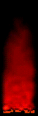

updated at 2021-02-25 by wojtek at bitologia.org (index)
Classical motif, no need to explain.
The assembly code is based entirely on the work of Kamil Dziekanowski (Dean / TS). The original code written in Turbo Pascal (6.0) supported by Assembler was printed (with comments by Borek) exactly 25 years ago in Bajtek (Feb. '96). It uses red-yellow-white palette.
